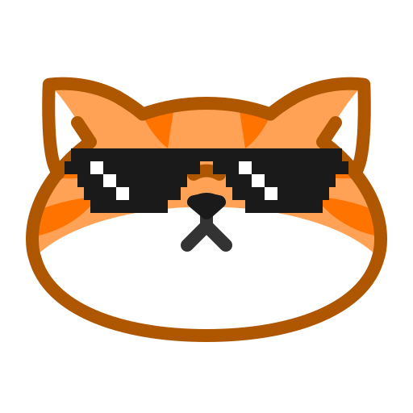

OCEAN
Habit Tracker
About Me

Ocean is a privacy-first habit tracker built to help you stay consistent and reach your goals without any distractions. All data is stored locally on your device, and the app is designed to work offline with a clean, minimal interface. Whether you’re tracking habits, tasks, or daily routines, Ocean keeps things simple and focused.


Projects
Project descriptions will go here...
Skills
Skills listing will go here...
Contact
Contact information or form will go here...
Privacy Policy
Effective Date: March 18, 2026
App Name: Ocean - Habit Tracker
1. Introduction
Welcome to Ocean - Habit Tracker. Your privacy is important. This Privacy Policy explains how your information is handled when you use the app.
2. Data Collection
Ocean - Habit Tracker does not collect, store, or share any personal data from users.
All data you enter (such as habits, tasks, notes, or progress) is stored locally on your device only.
3. Local Data Storage
- Your data remains entirely on your device.
- We do not have access to your data.
- No data is transmitted to external servers.
4. Permissions
The app may request limited permissions strictly for functionality, such as:
- Storage access (if backup/export features exist)
- Notifications (for habit reminders)
These permissions are used only for app features and not for tracking or data collection.
5. Third-Party Services
Ocean - Habit Tracker does not use third-party services that collect user data.
(If you later add analytics, ads, or Firebase, this section must be updated.)
6. Data Security
Since all data is stored locally:
- You are responsible for maintaining your device security
- We recommend using device-level protections like PIN, password, or biometric lock
7. Data Deletion
You can delete your data anytime by:
- Clearing app data
- Uninstalling the app
This permanently removes all stored information.
8. Children’s Privacy
This app does not knowingly collect any personal information from children or users of any age.
9. Changes to This Policy
We may update this Privacy Policy from time to time. Updates will be reflected with a new "Effective Date."
10. Contact Us
If you have any questions about this Privacy Policy, you can contact:
Email: [your email]
11. Offline & Privacy-first Statement
Ocean - Habit Tracker is designed as a privacy-first, offline application.
No ads, no tracking.